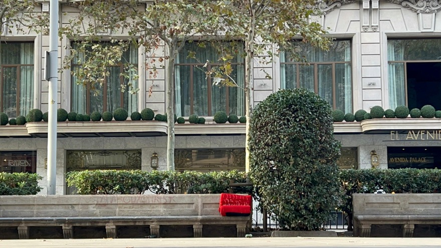

Beauty That Excludes
An embodied research on hostile design, urban aesthetics, and the politics of beauty in Barcelona.
This project investigates how beauty, order, and cleanliness in Barcelona's public space often rely on quiet forms of exclusion. Through walking as a method, mapping, filming, and embodied interventions, I explore how design regulates who may rest, who may appear, and what forms of life are allowed to exist. What looks "beautiful" frequently hides a subtle violence.
Methodology
How
Walking became my primary method of inquiry. I explored the city through 1PP (first-person perspective) documentation, using my body, my phone, and direct sensory observation as tools for detecting exclusion. I photographed, filmed, and paused in spaces where beauty, order, and hostility intersect. Every time I encountered spikes, barriers, anti-rest benches, or decorative nature trapped in controlled formats, I documented them and added the location to a shared map.
This systematic process resulted in a detailed map of hostile design across Barcelona, built through repeated walks and embodied encounters. The map served both as a research log and as a spatial portrait of the city's politics of beauty.
Where
My walks focused on the central areas of Barcelona where tourism, circulation, and urban aesthetics collide. I moved through La Rambla, Parc de la Ciutadella, nearby plazas, pedestrian streets, and the surrounding commercial corridors, spaces where beauty is carefully staged and where the pressure to maintain a "clean" and orderly image is strongest. These are the places where hostile design appears most intensely: at the entrances of hotels and restaurants, along busy sidewalks, around benches and resting points, and in spots where people and non-human species are subtly discouraged from stopping.
Why
Hostile design hides in plain sight. It becomes invisible precisely because it is normalized as "maintenance," "cleanliness," or "urban order." Walking the city allowed me to sense this violence not as a concept but as an experience: through discomfort, interruption, proximity, and embodied friction. Mapping the findings made visible a network of micro-violences that collectively shape who may rest, who may appear, and which forms of life the city is willing to host.


Manifesto: Beauty as Violence
Beauty has become a form of control.
Our public spaces perform perfection while silencing life. They are stage sets, not ecosystems. Benches deny rest, walls erase voices, and spikes replace sanctuary.This is not design for people; it is design against life.
It decides who belongs, and who must disappear. It declares what is clean by violently excluding what it calls dirty.
Therefore, we must see this order for what it is: violence disguised as aesthetics. If beauty requires exclusion, then it is not beauty. It is a system of exclusion.
Comfort for a few always requires discomfort for the many.
Conceptual Definition
Urban beauty often appears neutral: clean lines, polished surfaces, controlled vegetation. However, this project argues that such beauty operates as a system of exclusion. In Barcelona, benches, facades, and even landscaping participate in a spatial order that determines who may sit, pause, appear, or exist. Violence here is subtle: not physical force, but the systematic removal of discomfort, disorder, and "undesired" beings, humans, plants or birds.
This work intervenes in those silent boundaries. Through embodied actions, I test what happens when the excluded returns: a body resting where it shouldn't, a plant growing where it isn't allowed, a person wearing the hostile architecture meant to repel them.
The objective is not to fix the city, but to reveal its underlying logic: beauty as discipline, and life as resistance.
Action 1: The Prohibited Rest
Hypothesis
If beauty operates through the denial of rest, then placing my body in spaces designed to repel it will reveal how comfort and exclusion are distributed.
Prototype
I attempted to rest for 10 minutes on surfaces modified with spikes designed to prevent people from sitting. I documented the action through time-lapse videos and notes written immediately afterward.

WHY
To expose how public space quietly discourages rest by transforming design into a mechanism of control. By placing my body in spaces intentionally made uncomfortable, I test how beauty operates as a disciplinary tool that sanitizes the city by removing undesired presence.
WHERE
Ledges with spikes and other anti-rest modifications found outside hotels, shops, and restaurants, areas where maintaining a "clean" and orderly image is prioritized for customers and tourists. These sites make visible how private commercial interests shape the public experience of the city.
HOW
I sit for a fixed period of 10 minutes in each location, placing my body in direct friction with surfaces designed to repel it. I document the action using time-lapse video and photographs, observing both my own discomfort and the reactions, often indifference, of passersby. My body becomes a temporary disruption in a space optimized for circulation, not rest.
PROTOCOL — Action 1: The Prohibited Rest
Critical Evaluation
The action produced a noticeable discomfort, but the short duration limited the depth of the experience. Most passersby ignored my presence, revealing how normalized these hostile elements are in the urban landscape. While the prototype exposed indifference and raised questions about belonging in public space, the intervention could be strengthened by extending the time, allowing the body to accumulate visible fatigue, and increasing the friction between the human body and the architectural hostility.
Action 2: Returning Life
Hypothesis
If beauty depends on controlling nature, then reintroducing small forms of life can expose this illusion of cleanliness.
Prototype
I planted small cuttings of Kalanchoe beharensis in highly controlled spaces: dried planters, concrete corners, hotel entrances. I visited the sites 24 hours later to observe their fate.

WHY
To challenge the idea that beauty depends on controlling or sterilizing nature. By reintroducing small, resilient plants into spaces designed to exclude life, I test how a gentle biological intervention can shift the meaning of "cleanliness," "care," and "maintenance" in the city.
WHERE
Empty or dried planters, hyper-urbanized streets with only concrete, lifeless corners near restaurants or hotels, and areas where nature is restricted to decorative formats. These sites emphasize the contrast between decorative nature and spontaneous life.
HOW
Using cuttings of Kalanchoe beharensis, a plant capable of propagating from fallen leaves, I discreetly place small pieces in locations where vegetation has been removed or cannot thrive. The action is symbolic and subtle. I document placements with photographs before and after, noting how even a small form of life reconfigures the space's atmosphere and meaning.
PROTOCOL — Action 2: Returning Life
Critical Evaluation
The results varied: some plants remained untouched and subtly protected by pedestrians, while others were removed within hours. This contrast revealed how maintenance practices prioritize cleanliness over spontaneous life. The intervention exposed the fragility of non-human presence in hyper-controlled environments. To expand its critical potential, future iterations could introduce life directly into more "forbidden" surfaces, such as spikes or tight architectural gaps, revealing how design suppresses even the possibility of growth.
Action 3: Wearing Hostility
Hypothesis
If hostile architecture is invisible on buildings, then translating its form to the body will expose its violence.
Prototype
I modified a dress using zip-ties to mimic anti-homeless and anti-pigeon design. I walked through busy urban areas to document reactions.
WHY
To make visible the violence embedded in hostile architecture by translating it onto the human body. Spikes, ties, and deterrent mechanisms often go unnoticed when placed on buildings, but become unsettling when worn by a person. By embodying these hostile forms, the action reveals how normalized, and invisible, architectural violence has become, and how differently it is perceived when directed at a human body rather than an unwanted presence.
WHERE
The action was carried out along La Rambla, Parc de la Ciutadella, and the surrounding pedestrian and touristic areas, spaces where visibility, movement, and aesthetic control converge. These highly circulated zones, curated for tourism and public display, become ideal sites for confronting the contrast between architectural hostility and human vulnerability.
HOW
I modified a dress by attaching zip ties along the sleeves, waist, front, and back, echoing the visual language of anti-homeless barriers and anti-pigeon deterrents. Wearing this outfit, I walked at a normal pace through La Rambla, Parc de la Ciutadella, and nearby pedestrian streets. My presence was not performative; the outfit itself generated the friction.
PROTOCOL — Action 3: Wearing Hostility
Critical Evaluation
This prototype generated the strongest reactions. The gesture of embodying hostility made the violence of urban design visible, producing discomfort, glances, and avoidance from strangers. It showed how hostility is tolerated when directed at non-human bodies but becomes unsettling when applied to a human one. The action opens possibilities for deeper engagement, sustained presence, slower movement, or indirect forms of interaction, that could intensify the social friction and expose more clearly the relational dynamics of exclusion.
ACTION 4: Softness Interrupted / Softness Restored

Hypothesis
If softness is culturally associated with comfort and hospitality, then turning a soft object hostile, and then restoring its softness, can reveal how design shapes multispecies relationships. This action tests how pigeons, a species heavily excluded through urban design, respond to alternating states of hostility and hospitality.
Prototype
I modified a cushion to first become an uncomfortable, unwelcoming object (Phase 1), and then restored it to a hospitable, inviting surface (Phase 2). The cushion was placed on a public bench in Passeig de Gràcia while I observed and recorded reactions from both humans and pigeons.

WHY
To investigate how the presence of hostile design affects not only physical interaction, but also memory and trust, especially among non-human urban species. By alternating between discomfort and welcome, this action examines whether hospitality can be restored through design alone, or whether behavioral patterns shaped by long-term exclusion persist.
WHERE
The action took place in Jardins de la Reina Victòria, along Passeig de Gràcia—a location that combines: benches frequently used by pedestrians, visible examples of hostile architecture, moderate but continuous flows of people, pigeons that occasionally visit this area but avoid built surfaces. This site allows the intervention to be observed without obstructing public space, while ensuring proximity to non-human life.
HOW
Across both phases:
- I placed the cushion in the same central position on the bench
- I sat on a bench directly in front, discreetly filming with my phone
- I observed human hesitation, glances, and avoidance
- I documented pigeons' distance, interest, flight paths, and refusal to approach
- Each phase lasted 30 minutes
- Crumbs were placed gently and evenly across the cushion for Phase 2
Although I noticed some glances while carrying and installing the object, these moments were not filmed; the documentation focuses on the behavior around the bench during both phases.
Phase 1 — Softness Interrupted
A soft cushion is transformed into a hostile object using metal wire. Instead of sharp spikes, I shaped the wire into small arch-like forms that disrupt comfort without causing damage to the fabric. At a glance, the cushion appears normal, but once approached closely or sat upon, the discomfort becomes visible.
Placed at the center of a public bench, the object produced hesitation, confusion, and avoidance. Humans approached but did not touch it; pigeons kept distance from both the bench and the ground beneath it.
Phase 2 — Softness Restored
The wire is removed. Breadcrumbs are placed gently on the cushion, turning it into a symbolic invitation for pigeons to rest and feed.
This phase tests whether temporary hospitality can counteract long-term exclusion, and whether pigeons feel safe enough to accept the invitation.

PROTOCOL
Critical Evaluation
The cushion produced different kinds of friction in each phase. During Phase 1, humans kept distance, puzzled by the object's altered softness. Pigeons did not approach the bench or the ground beneath it, signaling the effectiveness of subtle discomfort.
During Phase 2, the full restoration of softness and the presence of food did not lead pigeons to engage with the cushion. They maintained significant distance, rarely landing nearby. Their avoidance suggests that hospitality cannot be instantly restored through design gestures. Years of spikes, deterrents, and hostile surfaces have shaped their perception of benches as unsafe.
Their absence became meaningful: it revealed how deeply exclusion has been internalized, and how trust is not automatically regained even when softness returns.

COLLECTIVE ACTION

Conceptual Statement
This collective action reframes pigeons not as "subjects of study" or "urban pests," but as a multispecies community already navigating, negotiating, and shaping the public spaces of Barcelona. Rather than intervening directly, this action focuses on co-presence, following, and learning from pigeons' own movement patterns, social dynamics, and urban strategies.
Hostile architecture has deeply influenced pigeon behavior, not only where they land, but where they feel safe, how they form groups, and how they move through the city. By shifting from "designing for pigeons" to "designing with pigeons," this collective action acknowledges their agency, routines, emotional responses, and spatial intelligence.
The objective is not to modify their behavior, but to understand it. The action becomes a collaboration through attentive observation, relational proximity, and respect for autonomy, recognizing pigeons as co-inhabitants whose daily spatial negotiations reveal the hidden structures of exclusion in the city.
Action Strategy
The collective action unfolds in two interconnected parts:
Part 1 — Individual Trajectories (Jardins de la Reina Victòria)
Following individual pigeons over extended periods, documenting:
- preferred routes
- escape patterns
- comfort distances from humans
- feeding attempts
- resting spots
- aerial vs ground movement shifts
- responses to pedestrian density and noise
- use of infrastructure (trees, fountains, lamp posts, monuments)
This close tracking revealed pigeons' micro-strategies of survival and how they constantly adjust to human flows, sudden disturbances, and potential threats.


Part 2 — Group Dynamics (Plaça de Catalunya)
Mapping collective behavior inside one of the most pigeon-populated public spaces in Barcelona, focusing on:
- how groups form, merge, dissolve
- which pigeons stay at the periphery vs the center
- how pigeons navigate proximity to humans feeding them
- how green areas vs concrete areas structure resting patterns
- how availability of food alters movement and density
- how pigeons negotiate hierarchy, resources, and safety
This mapping made visible a multispecies choreography shaped by food availability, human generosity, urban geometry, and pigeons' own social codes.
Protocol
Activation of an Affective Relationship with the Collective
Why this community?
Because pigeons are one of the most actively excluded species in the city, yet they remain essential urban inhabitants. They embody the contradictions of urban beauty: tolerated in plazas, rejected in commercial streets. Their daily micro-movements reveal the invisible borders and pressures of urban design.
How I contribute
- By observing rather than intervening
- By mapping their lived experience with precision and care
- By acknowledging their spatial intelligence
- By treating their decisions as data, communication, and agency
- By honoring their patterns instead of imposing human logic
Why they need this activation
Not because pigeons need help, but because humans need to understand how pigeons navigate a city designed against them.
Their avoidance, their withdrawal, their hesitations are forms of knowledge. This action reveals their strategies, fears, adaptability, and resilience.
Collective objectives (not only mine)
- To make visible pigeons' urban knowledge
- To understand how they share space with humans
- To reveal the impact of hostile architecture on their movement
- To build multispecies sensitivity and recognition
- To question human-centered assumptions of control and beauty
- To position pigeons as co-researchers, not passive objects
Critical Evaluation
The collective action shifted from attempting to attract pigeons into an experiment toward practicing a slow, relational form of multispecies observation. By following pigeons across two different urban ecologies, Jardins de la Reina Victòria and Plaça de Catalunya, I learned to understand pigeons not as urban nuisances but as inhabitants whose routines, routes, and decisions are directly shaped by architectural hostility and human behavior.
Conclusion
The collective action succeeded by reframing participation: instead of expecting pigeons to respond to a design intervention, I positioned myself as the one who must adapt. Through slow observation, the pigeons became co-researchers, not subjects.
Their behaviors, detours, hesitations, resting choices, group formations, revealed how exclusion shapes everyday life for non-human inhabitants of Barcelona. This action expanded the project from studying hostility as an architectural phenomenon to understanding its ecological and emotional consequences.
The most meaningful form of participation emerged not through interaction but through co-presence, careful attention, and the willingness to let the pigeons lead.
Final Reflection
This project began as an exploration of hostile design in Barcelona, but it unfolded into something far more complex: a confrontation with the limits of aesthetic order, with the politics of public space, and with my own assumptions about agency, participation, and care.
Four Actions, Four Faces of Urban Violence
Body as Testimony
My body resting where it shouldn't made visible the discomfort engineered into public space.
Fragile Life
Small plants placed in forbidden corners exposed the fragility of spontaneous life under regimes of maintenance.
Violence Transferred
Wearing hostile architecture showed how violence becomes legible only when transferred to the human body.
Softness Manipulated
Transforming a cushion revealed how easily comfort can be manipulated and how it shapes public behavior.
These actions revealed how normalized hostility has become, so embedded into the urban aesthetic that people barely see it anymore. They also taught me that critical design is not only about making violence visible; it is also about understanding the systems that sustain it.
Learning to See Differently
What the Pigeons Taught Me
- Their avoidance, hesitation, and detours were not deficits but accumulated memories of exclusion
- Their routes revealed an invisible architecture of risk and adaptation
- Trees as safe zones, fountains as shared resources
- Pedestrian streams as threats, green patches as temporary shelters
- Edges as negotiation spaces
Horizontal Participation
This was the first moment in the project where participation felt truly horizontal. Not because pigeons interacted with my prototype, but because I interacted with their world, through attention, patience, and relational humility.
Their forms of communication were subtle but powerful: a pause before crossing a path, a sudden flight when a stroller approached, the slow merging of groups around a stranger offering food...
Through this, I learned that collective action does not require interaction; it requires
And responsiveness begins with observation, not intervention.
Core Understandings
Beauty as Governance
Beauty is not neutral; it is a tool of governance that decides who and what belongs.
Design Shapes Memory
Hostile design shapes more than space, it shapes memory, movement, and trust across species.
Coexistence as Negotiation
Coexistence is not granted by design; it is negotiated through time, patience, and mutual adaptation.
Agency as Withdrawal
Non-human agency often appears as withdrawal, silence, or hesitation, forms of resistance that must be learned to recognize.
True Collectivity
Acting collectively means acknowledging that others, human or not, have their own priorities, rhythms, and vulnerabilities.
From Exposure to Repair
If the earlier actions exposed violence, the final collective action taught me about repair.
Not the romantic idea of "inviting nature back", but the more honest recognition that trust cannot be manufactured instantly, and that care is a slow, subtle, and unfinished process.
This project ends not with a resolved conclusion but with an expanded sensitivity: an understanding that cities are multispecies landscapes, and that design, when attentive, can shift from controlling life to learning from it.